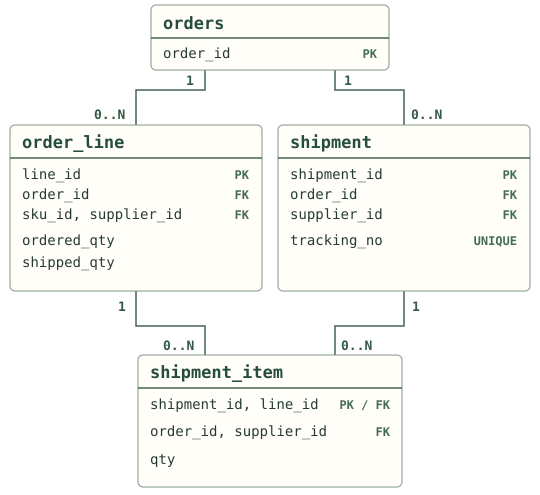

資料模型案例 · PostgreSQL 設計實驗
一筆訂單明細分兩次寄，怎麼查每包寄了幾件？
訂單 100 買了 3 件衣服、2 支牙刷。兩家供應商都有足夠庫存。服飾商先寄 2 件衣服，日用品商寄出 2 支牙刷，服飾商再寄最後 1 件衣服。客服拿著第一包的物流號，想知道裡面裝了幾件。
同一張訂單，兩種記法
A · 累計數量與最後物流號
每寄一批就更新 order_line。只查目前進度時，讀取該筆明細就能知道剩幾件；同一明細再次出貨時，先前的物流號會被覆寫。
B · 出貨單與出貨明細
每批建立一張 shipment，用 shipment_item 記下各明細這次寄出的數量。可以逐包追溯，寫入時要一併維護明細與累計數。
| 時間點 | line_id | shipped_qty | last_tracking_no |
|---|---|---|---|
| 第一批寄出後 | 1 | 2 | CLOTH-01 |
| 第三批寄出後 | 1 | 3 | CLOTH-02 |
這兩列是同一筆資料在不同時間的快照。最後只看得到累計 3 件；即使知道最後一個物流號，也無法從這列還原第一包寄了幾件。
方案 B 的 ER 圖

| 物流號 | shipment_id | line_id | 商品 | 本批 qty |
|---|---|---|---|---|
| CLOTH-01 | 1 | 1 | 衣服 | 2 |
| BRUSH-01 | 2 | 2 | 牙刷 | 2 |
| CLOTH-02 | 3 | 1 | 衣服 | 1 |
第一包 CLOTH-01 寄了 2 件衣服。沿著 line_id = 1 還能找到第三包的 1 件；兩筆相加，正好等於衣服明細的累計出貨數 3。
看 SQL · 用物流號查第一包
SELECT s.tracking_no, i.line_id, i.qty
FROM lab06_b.shipment AS s
JOIN lab06_b.shipment_item AS i
USING (shipment_id, order_id, supplier_id)
WHERE s.tracking_no = 'CLOTH-01';在三次出貨完成後、實驗結尾回滾前執行，結果為 CLOTH-01 | 1 | 2。
哪一層擋下錯誤？
- 把牙刷放到服飾商的包裹
shipment_item用(shipment_id, order_id, supplier_id)對出貨單，用(line_id, order_id, supplier_id)對訂單明細。兩個複合外鍵共用訂單與供應商欄位。配錯供應商或配到另一張訂單，新增明細就會失敗。- 衣服只訂 3 件，卻想寄第 4 件
allocate()先以shipped_qty + p_qty <= ordered_qty為條件更新累計數，成功後才新增出貨明細。若明細寫入失敗，這次更新也會回滾。直接繞過函式修改數量，摘要與明細仍可能失去一致性。- 兩個人同時按出貨
- 雙連線實驗另用訂單 200，訂購數量為 10。連線 A 配置 7 件但尚未提交，連線 B 要配置 6 件就會等待。A 提交後，B 因剩餘數量不足被拒絕。實測兩邊都結束後，累計出貨與明細加總都是 7。
本例假設一個 SKU 由一家供應商履約。若同一個 SKU 要由多家供應商分攤，就要另外記錄每家獲配的數量。物流簽收與庫存扣減也各有自己的紀錄。
相關詞條
設計實驗來源
改編自 research-schema-design 第 06 章。以上為該章的兩種設計；詞條中的 Saleor 專案實例可由「分批出貨」另行查閱。